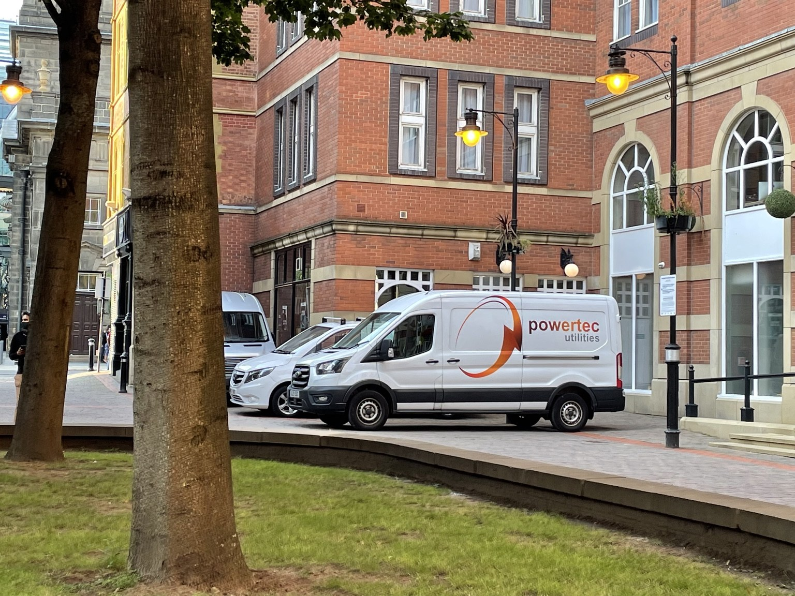

Utility foundations
Our operational culture was developed within electricity distribution, where disciplined switching and clearly defined operational responsibility are expected as standard.

Powertec Utilities Ltd
Established high voltage experience applied to modern critical infrastructure.
Powertec Utilities Ltd was established in 2012 to provide specialist high voltage engineering and operational support to the electricity and infrastructure sectors.
Our foundations are in UK electricity distribution, with experience across multiple DNO environments covering network operations, construction, refurbishment, switching, commissioning, fault restoration and project delivery.
That experience now extends to European data centres, supporting complex commissioning and energisation programmes where electrical safety, system resilience and operational control matter most.

Powertec's capability has been shaped by direct involvement in electricity distribution, HV asset replacement, network restoration, testing and commissioning.
Our operational culture was developed within electricity distribution, where disciplined switching and clearly defined operational responsibility are expected as standard.
That background now supports complex commissioning environments where multiple disciplines must work safely around changing electrical configurations.
Programme pressure never overrides the requirement to establish and maintain safe working conditions.
Defined responsibilities, controlled systems and disciplined operational procedures underpin delivery.
Decisions are grounded in practical HV operational and commissioning experience.
We take ownership of the responsibilities entrusted to us in safety-critical environments.
Engineering, construction, commissioning, OEM and operational teams succeed through clear interfaces.
Lessons from operational and commissioning environments are used to strengthen future delivery.